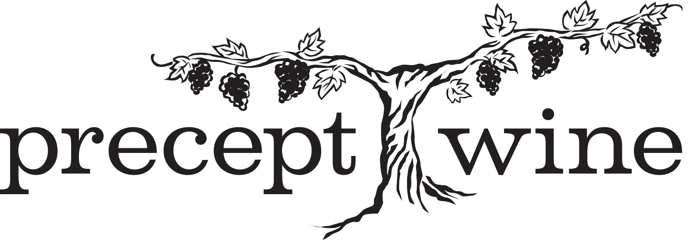

Morgan Stanley
I interned for Morgan Stanley during the summer in 2021. During my internship, my responsibilities included working directly with a financial advisor to ensure clients were getting the necessary information about their individual portfolios. In order, to provide clients with investment options and choices, with the ultimate goal of enhancing their financial position.
Peak Running
I have been working at Peak Running, a retail run specialty business since it first opened up in 2014. This is a family-owned business, which has given me the opportunity on a first hand basis, to watch the business grow. Peak Running now has four locations, with the possibility of a fifth location materializing in the near future. I'm very pleased and fortunate to have had this type of work opportunity, as I have had the ability to assist customers, manage inventory, handle sales transactions, as well as being exposed to the process involved with inventory acquisition. As I've been on apparel buying trips, to assist with determining what apparel should be within Peak's locations, with such brands as Lululemon, Alo, Tasc, Rabbit, Vuori, etc. This experience at Peak Running, has given me an up close perspective of what it takes to build a business, from the initial stages of a start-up.
Precept Wine
I engage and develop relationships with accounts to help spread awareness and placements of House Wine. I market the brand through social media and monthly content submissions. I'm connecting with other ambassadors during weekly and regional meetings.
